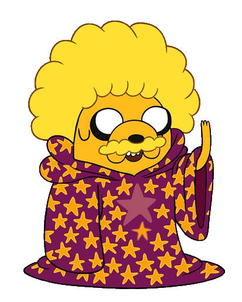
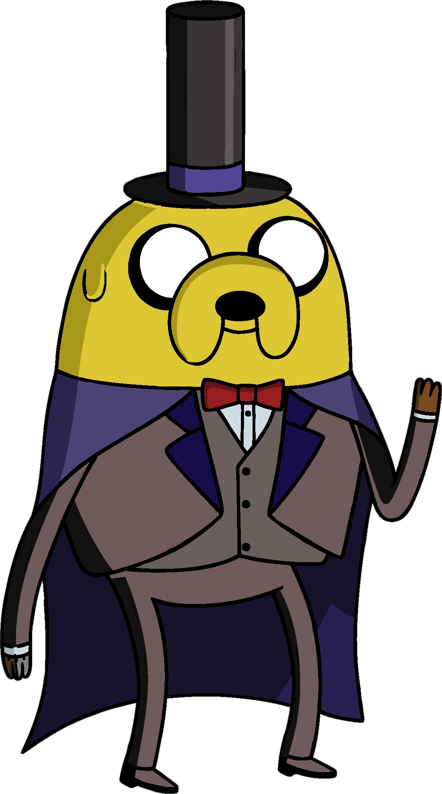
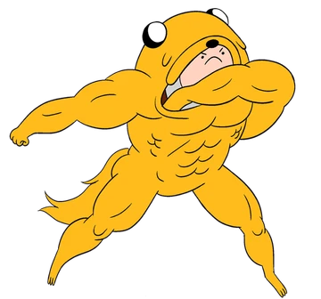

| Nombre |
Imagen |
Descripción |
| Jake el Mago |
 |
-En el episodio, Finn y yo conseguimos poderes de Magos, tras superar las pruebas de Bufo, pero yo no quería seguir y dejé los poderes, dejando a Finn en un problema. |
| Randy Butternubs |
 |
-Finn y yo nos colocamos máscaras para entrar a una fiesta, en donde todos los invitados llevan una. Me coloco una máscara verde y según la invitación, el nombre misterioso de él es Randy Butternubs. |
| Traje de invierno |

| -También uso un traje invernal ya que el mundo alterno esta totalmente congelado. |
| Traje de Jake |
 |
-Es un traje en el que Finn se mete dentro de mi para combatir y pelear. Los músculos se agrandan y puede correr más rápido. |
| Jake zombie |
 |
-Luego de que una plaga de zombies ataque el Dulce Reino, fui infectado por uno de los zombies. |